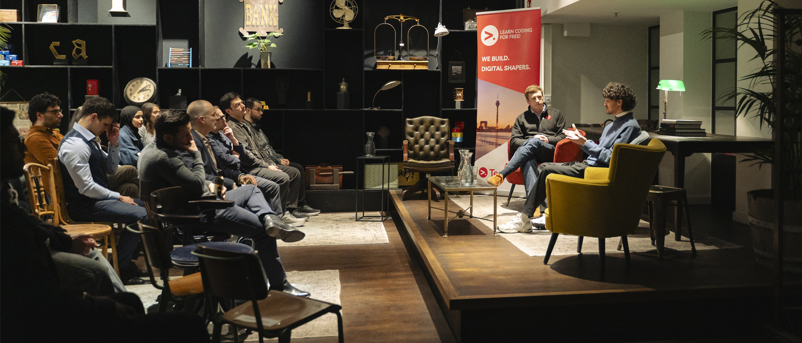

I automate processes and cut what they cost.
Manual workflows are expensive — in hours, in errors, in decisions made too late. I replace them with automated ERP processes, clean data pipelines, and reporting people actually act on.
Two perspectives, one job: make it work.
Business Informatics gave me a dual lens — technical depth and business acumen. I connect systems, teams, and processes to deliver results that matter.
End-to-end systems thinking
ERP, data pipelines, reporting, and automation are one interconnected machine. Seeing the whole of it lets me fix root causes, not symptoms.
The business–technical bridge
I translate requirements between stakeholders and developers — keeping both sides aligned and cutting the cost of miscommunication.
Ownership & execution
Took over ERP responsibility on short notice and managed an international go-live within my first year. Undefined problems are where I do my best work.
Where I've delivered.
International work across automotive, electronics, and e-commerce — building solutions that scale.
Primary technical contact for ERP operations across three entities — Infor and Dynamics 365 — including an international subsidiary go-live, Power BI reporting, and workflow automation.
2024 — nowBuilt an Azure AI prototype automating internal system documentation workflows; standardized project communication across ServiceNow, Mural, and Jira.
2023 — 24Power BI dashboards supporting ERP and process readiness for marketplace expansion across five European countries.
2022 — 23Results you can count.
Primary internal technical contact for ERP operations across three entities, including Dynamics 365 setup and international go-live support.
Documentation effort reduced through AI-supported workflows built on Azure OpenAI.
BI dashboards supporting marketplace expansion across Italy, Spain, Portugal, the Netherlands, and France.

Let's build something together.
Looking for someone who can bridge business and technology? I'd like to hear what you're working on.